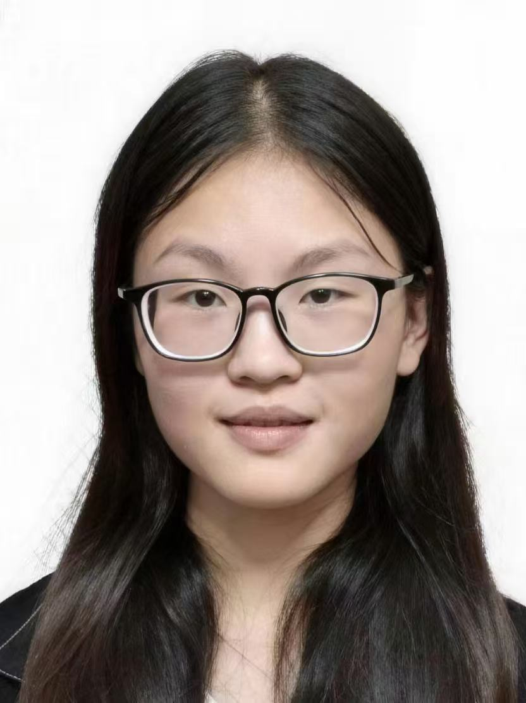
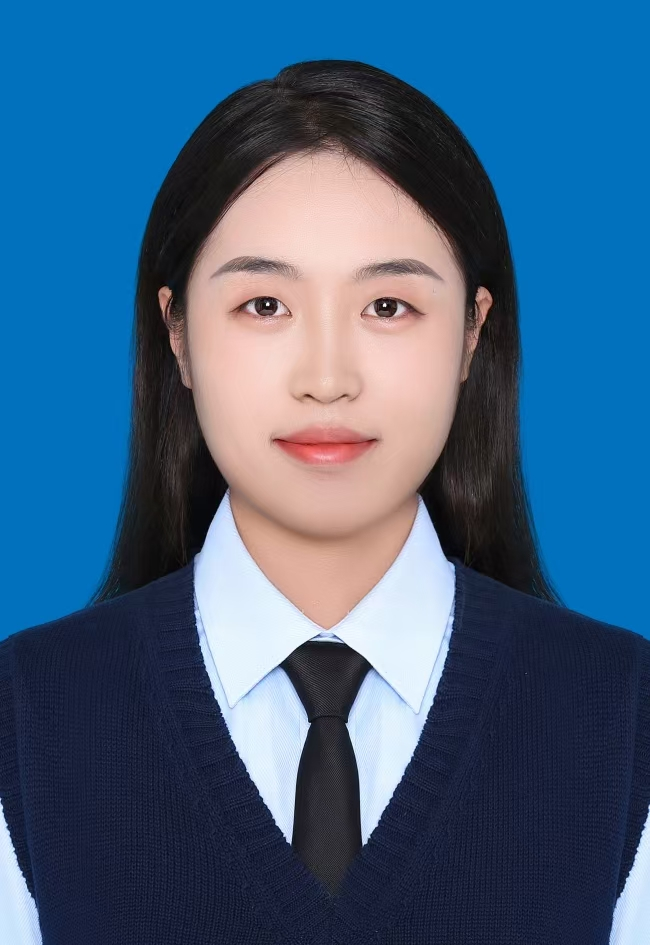
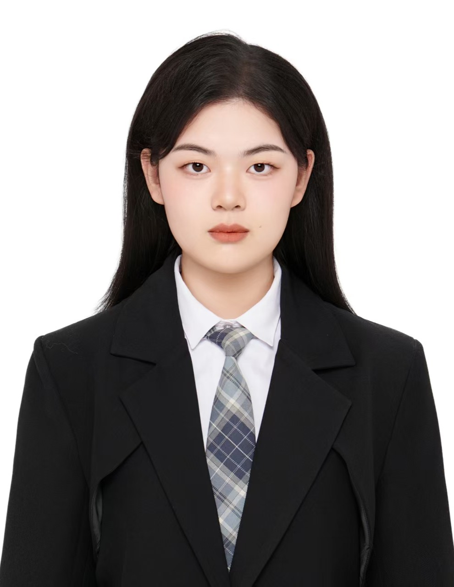
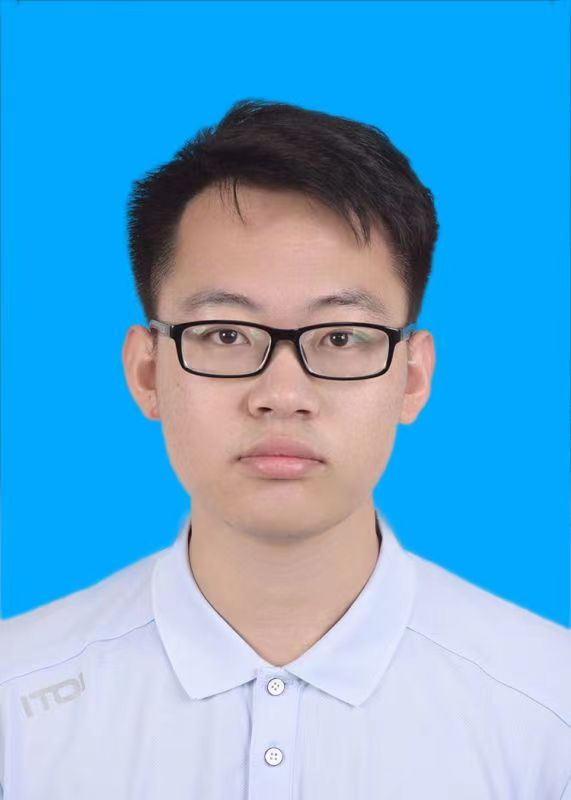
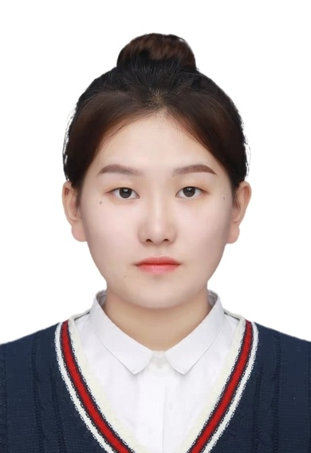
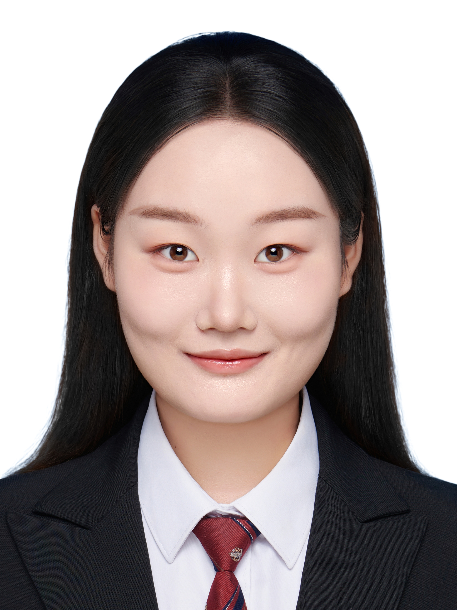

|
|
杨贵军， 长安大学二级教授，长江学者特聘教授，博士研究生导师，农业农村部农业遥感机理与定量遥感重点实验室主任，十三五、十四五国家重点研发计划专项项目负责人， 国际SCI期刊Artificial Intelligence in Agriculture副主编、Computers and Electronics in Agriculture“定量遥感模型”专刊主编、 遥感学报副主编、国家对地观测科学数据中心“首席数据专家”。 国际数字地球学会数字农业专委会、数字生态专委会副主任委员，中国农学会农业信息分会副主任委员、中国作物学会智慧农业分会副主任委员。 主要从事农业定量遥感机理及应用研究，在作物光谱机理模型与定量反演、遥感时空谱融合与预测、育种田间表型感知等领域取得创新性成果， 在CELL-One Earth、Remote Sensing of Environment、Field Crops Research、ISPRS Photogrammetry and Remote Sensing等国际期刊发表SCI/EI第一及通讯作者论文150余篇， H-index 62，总引13497，从2020年连续入选爱思唯尔(Elsevier)中国高被引学者榜单，斯坦福大学全球前2%顶尖科学家榜单（World’s Top 2% Scientists）。 出版《农业定量遥感技术及应用》、《作物氮素定量遥感与应用》、《农业无人机遥感与应用》及《农田辐射传输机理与遥感成像模拟》专著4部，获得授权国际PCT发明专利2项，授权国家发明专利25项， 新技术新产品证书4项，牵头制定《GB/T 45725-2025农作物可见光-短波红外光谱反射率测量》国家标准1项及省部级标准2项， 获得河南省科学技术进步一等奖、浙江省科学进步奖一等奖、教育部科学技术进步一等奖等5项。 联系方式: guijun.yang@163.com |
陈伟男
2022级博士研究生
邮箱: 2022026021@chd.edu.cn
研究方向：作物表型监测，农业参数反演

张静
2022级博士研究生
邮箱: 2020126044@chd.edu.cn
研究方向：作物模型同化估产
张佑铭
2023级博士研究生
邮箱: 2023026021@chd.edu.cn
研究方向：灌溉事件识别、智能灌溉决策
闻宏睿
2023级博士研究生
邮箱: hhwenhongrui@126.com
研究方向：定量遥感建模与参数提取

刘淼
2023级博士研究生
邮箱: liumiao80125@163.com
研究方向：果树物候监测；作物生产与气候变化
唐澳华
2024级博士研究生
邮箱: 2022126042@chd.edu.cn
研究方向：作物参数反演与定量建模
段镕飞
2025级博士研究生
邮箱: 2025026025@chd.edu.cn
研究方向：虚拟星座，时空融合
韩月
2025级博士研究生
邮箱: yue_hann@163.com
研究方向：农业生态遥感
王拓
2023级硕士研究生
邮箱: 2023126030@chd.edu.cn
研究方向：农业参数定量反演，作物养分诊断
吴强
2023级硕士研究生
邮箱: 2023126016@chd.edu.cn
研究方向：冬小麦长势监测
刘恩奇
2023级硕士研究生
邮箱: enqiliu0504@163.com
研究方向：果树物候预测与花期监测

董培宣
2024级硕士研究生
邮箱: 2369893641@qq.com
研究方向：水稻长势监测与估产

白星
2025级硕士研究生
邮箱: baixingchd@163.com
研究方向：作物识别分类与估产

朱嘉琪
2022级硕士研究生
邮箱: 17662507806@163.com
研究方向：植被辐射传输模型
丁东亚
2025级硕士研究生
邮箱: 2063214353@qq.com
研究方向：作物表型监测
万楷
2025级硕士研究生
邮箱: 3535601689@qq.com
研究方向：作物表型监测，农业参数反演

王欣怡
2025级硕士研究生
邮箱: 1361566984@qq.com
研究方向：作物表型基因分析
杨悦
2024年硕士毕业生
邮箱: yangyue1928@163.com
工作单位：四川省地震局
张玲玉
2024年硕士毕业生
邮箱:zhanglyu902@163.com
工作单位：宜君县自然资源和林业局


农业农村部农业遥感机理与定量遥感重点实验室©2025 版权所有
地 址：北京市海淀区曙光花园中路11号北京农科大厦A座